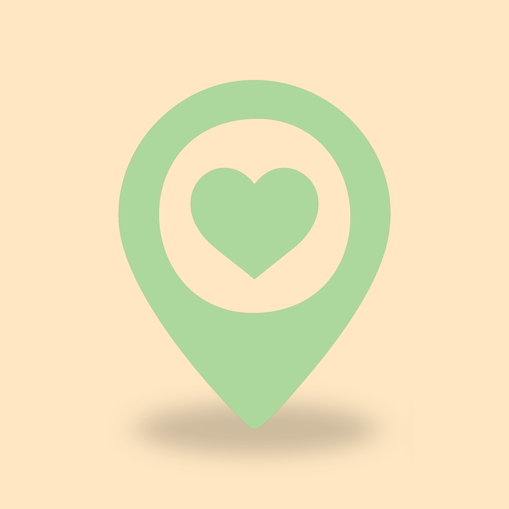

Organization Name
Brief description of services offered.
Services: Food, basic needs
Learn More
Community Resources & Connections
Find community support in Missoula and surrounding areas.
Click a map pin to explore a resource.
Example food resource in Missoula.
Location: Missoula, MT
Example housing resource in Missoula.
Location: Missoula, MT
Example healthcare resource in Missoula.
Location: Missoula, MT
Explore community organizations and services in Missoula.
Brief description of services offered.
Services: Food, basic needs
Learn MoreBrief description of services offered.
Services: Housing, shelter
Learn MoreBrief description of services offered.
Services: Healthcare, wellness
Learn More